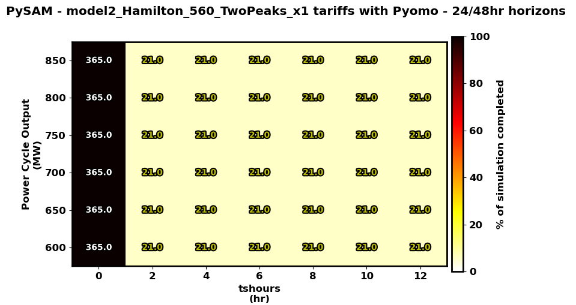

Current Status of Model 2a¶
Outlined here is the status of the Model 2a code framework.
Status of Model Components¶
Dispatch Model: [complete] a Pyomo dispatch MILP has been created and runs correctly within the project. It sets up an MILP and solves it when called.
SSC Model: [debugging] new classes have been added to SSC suite and work correctly except for some plant size cases. The base infrastructure has been written and needs some debugging for those failing cases (shown below).
NE2 Model: [complete] a Python interface class has been created and runs correctly within the project. It creates dispatch model instances, solves them, converts results to dispatch targets, and calls on SSC to execute at every timestep of the time horizon.
Parameter Sweep Inconsistencies¶
When running simulations in the parameter space spanning PC sizes between [600 - 850 MWe] and TES sizes between [0 - 12 hours], not every simulation finishes successfully. The problems always arise in the SSC models.
The reason why the runs do not finish successfully is that at some point, SSC chooses a mode where PC, TES, CSP, and LFR should all be set to the OFF position.
We are not modeling LFR shutdown within SSC as the procedures are too complex; therefore this OFF mode for all plant components should not be happening.
For these cases, the Pyomo dispatch targets are not telling the LFR to shut off. Therefore, some internal logic within SSC is causing it to diverge from the optimal solution for specific cases.
Using SAM Tariff Rates¶
Below is a heatmap of the parameter sweep results over PC and TES sizes. These are conducted under SAM Tariff rates (no peak amplification).
- Three values are represented per grid element:
an element color: shown by the colorbar, it represents how far along the year the simulation got before failing
a number: represents the day of the year where the simulation failed
- a number color: represents the cause of the simulation failure
White: simulation was successful
Yellow: failure occurred in SSC
Cyan: failure occurred in Pyomo
Red: false positive (simulation completed, but on a second look it actually chose the all OFF mode yet did not raise an error)

There are a lot of successful runs, but some failures occur as false positives due to some SSC internal logic error.
Using Twin Peak Tariff Rates¶
The same heatmap of parameter sweeps is shown but this time conducted under Twin Peak Tariff rates (new one I came up with where we have 2 daily peaks in the morning and afternoon).
{kind=link}
Only the cases without any TES finish successfully for some reason. Every other case fails at the exact same point, so there is a common error source.
Using CAISO Tariff Rates¶
The same heatmap of parameter sweeps is shown but this time conducted under CAISO tariff rates.

Only the cases without any TES finish successfully for some reason. A variety of failure points elsewhere, with some false positives when TES is large.
How to Debug¶
An overview of relevant Model 2a scripts can be found here. The procedure I use for debugging is as follows:
Run the PySAM script found here for the failing combination of PC and TES sizes and the corresponding market scenario/JSON script.
Make sure the
log_dispatch_targetsinput is set to True, discussed here.Just to be safe, I often just set the
overwrite_dispatch_targetsinputs to True to ensure we use the same time series in Step 2.
Run the PySSC script found here <https://github.com/uw-esolab/neup-ies/blob/master/simulations/scripts/debugging__Model2_scripts/run_PySSCWrap_DispatchTargets.py>. As long as you use the same JSON script and set the same PC and TES sizes from Step 1, it should find the corresponding dispatch targets file and load it into the SSC execution.